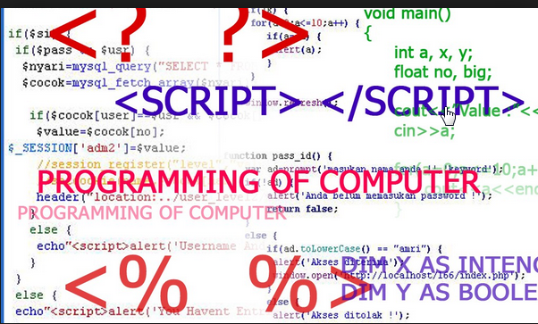

¿Qué es PHP?
Las siglas PHP vienen del acrónimo Hypertext PreProcessor, este lenguaje es utilizado para realizar páginas web los cuales trabajan de forma integrada con el lenguaje HTML.
La diferencia más importante con respecto a HTML es que cuando ejecuta las instrucciones, este código muestra solo los resultados, ya que nunca mostrará al usuario el código que contiene para poder obtener dicho resultado.
Esto lo hace muy seguro, además es muy simple de utilizar y permite realizar conexiones a DBA y ejecutar instrucciones SQL con el fin de guardar datos en la misma.
Etiqueta
Es una marca que delimita una porción de código, estos generalmente se identifican por tener la siguiente sintaxis

Conector
Es una porción de código que permite conectarse a un servidor de base de datos SQL.